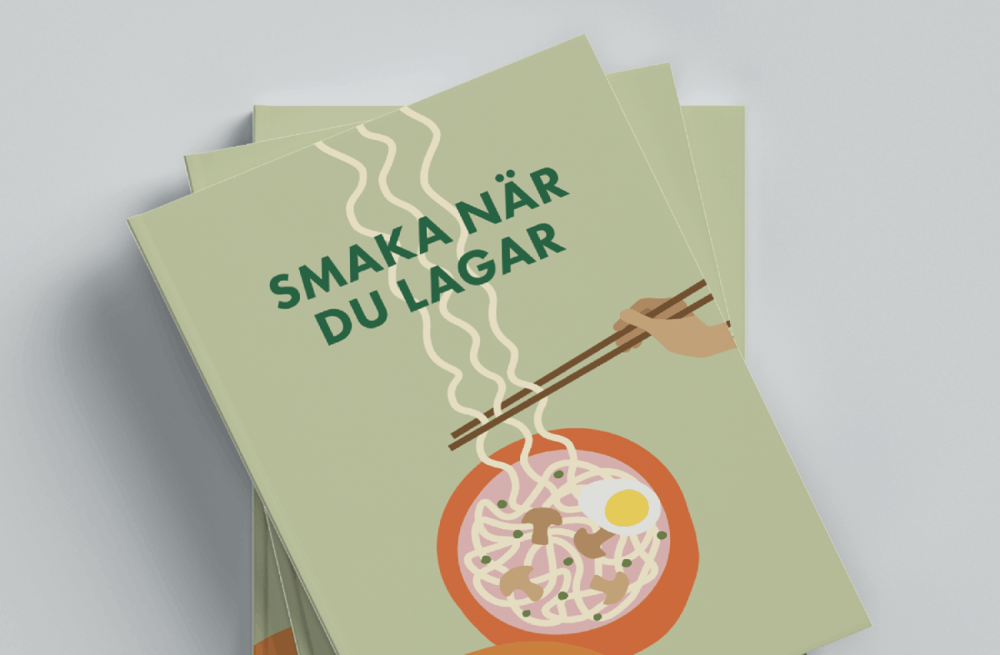
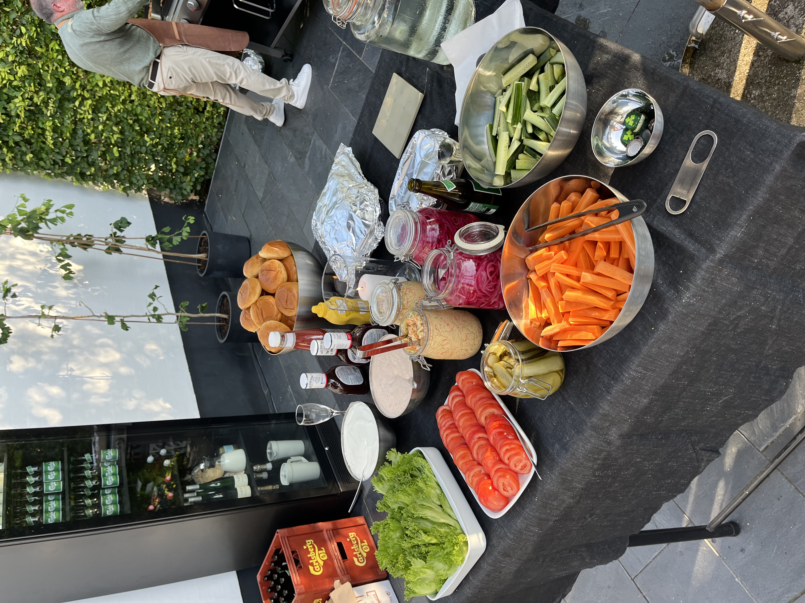

Varför jag älskar att laga mat
Mitt intresse för matlagning började redan när jag var liten. Jag minns hur jag som sexåring fick stå på en pall bredvid pappa vid köksbänken, med skärbrädan framför mig och en alldeles för stor kniv i handen. Min uppgift var att skära grönsaker- och jag tyckte förstås att det var världens viktigaste jobb. Sedan dess har jag spenderat många timmar i köket.
Jag följer nästan aldrig ett recept till punkt och pricka, utan smakar, testar och ändrar längs vägen. En skvätt citron här, lite mer vitlök där - och ibland blir det fantastiskt, ibland blir det... lärdom nästa gång. Det jag tycker mest om med matlagning är att det finns så mycket utrymme för kreativitet. Precis som med design kan man börja med en idé och sedan låta den växa fram. Och det bästa av allt är att resultatet går att dela med andra. Mitt intresse för mat har faktiskt gått så långt att jag till och med skrivit en egen kokbok.

Min kokbok innehåller över flertalet recept och är en sammanställning av mina favoritmaträtter. Varje recept är detaljerat och inkluderar tips och trick för att få bästa resultatet. Om du vill se mer av den så kan du klicka på länken nedan.
Länk till min kokbokJag skulle säga att jag är ganska bra på att laga mat - men som sagt inte så bra på att följa recept. Här kommer min helt objektiva bedömning av mina matlagningsskills.
| Matlagningsskill | Betyg | Kommentar | Bevis |
|---|---|---|---|
| Följa recept | 2/5 | Recept är mer en riktlinje än en instruktion | Jag ändrar nästan alltid något. |
| Smaksätta | 5/5 | Smaka, justera och smaka igen! | Många timmar i köket |
| Improvisera | 5/5 | Vad finns det i kylen? Vi löser det. | Otaliga experiment. |
| Presentation | 4/5 | Jag gillar att göra maten fin på tallriken. | Instagramkonto med matbilder. |
| Mat till många | 4/5 | Ju fler runt bordet, desto roligare! Att preppa är viktigt dock. | Älskar att laga mat åt familj och vänner. |
| Skapa egna recept | 4/5 | Jag gillar att testa mig fram. | Min kokbok är ett bevis. |
För mig handlar matlagning inte bara om att följa recept, utan om att våga testa sig fram, vara kreativ och framför allt ha roligt i köket. Oavsett om jag lagar mat till mig själv eller till många personer är det förberedelserna, alla smaker och tiden tillsammans runt bordet som gör matlagningen så rolig.
Här är ett exempel på hur det kan se ut när jag förbereder mig för en riktig matlagsningskväll - många ingredienser, lite kaos och förhoppningsvis något riktigt gott i slutändan!
